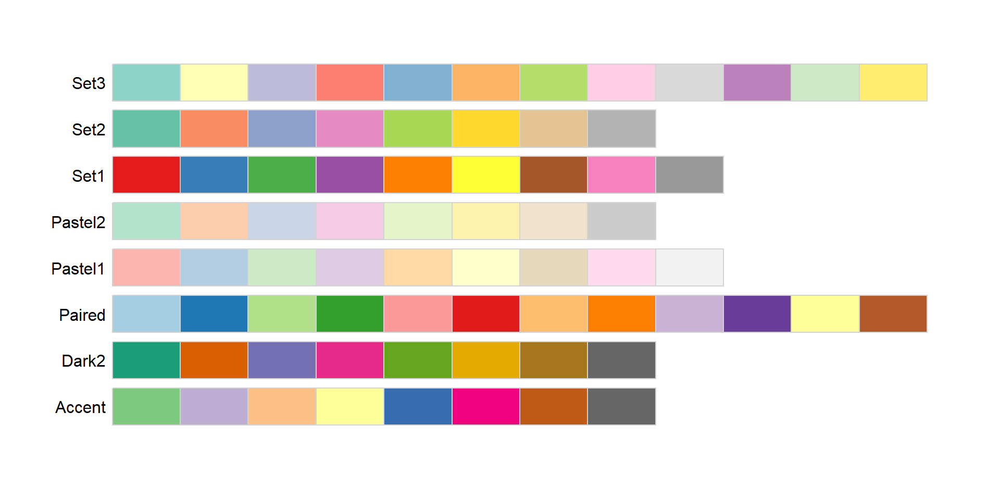

.
Why grammar?
You can create new sentences if you know about the grammar.
In ggplot2 context, you can create new graphics or tailored plot that suits your needs or preferences.
The idea of grammar of graphics

The idea of grammar of graphics


The idea of grammar of graphics

The idea of grammar of graphics

The idea of grammar of graphics
The idea of grammar of graphics

The idea idea of grammar of graphics
The idea of grammar of graphics
The idea of grammar of graphics
Data
Mapping
Data and mapping

Geometries
Geometries

Geometries
Each geom can display certain aesthetics.
Some of them are required.

Statistics
- syntax
Every layer has a statistical transformation associated to it.
geoms control the way the plot looks
stats control the way the data is transformed

Statistics
Geoms and stats
Every geometry has a default stat.
geom_linedefault stat isstat_identitygeom_pointdefault stat isstat_identitygeom_smoothdefault stat isstat_smooth
Each stat has a default geom
stat_smoothdefault geom isgeom_smoothstat_countdefault geom isgeom_barstat_sumdefault geom isgeom_point
Statistics
Interesting stats
stat_smooth(geom_smooth)stat_unique(geom_point)stat_summary(geom_pointrangestat_count(geom_bar)stat_bin(geom_histogram)stat_density(geom_density)stat_boxplot(geom_boxplot)stat_ydensity(geom_violin)
Statistics
Computed aesthetics
When a stat perform a transformation, new variables are created.
e.g., in geom_histogram computed variables are:
count- number of points in bindensity- density of points in bins, scaled to integrate to 1 ncount.ncount- count, scaled to maximum of 1ndensity- density, scaled to maximum of 1
To access: + old way: ..<stat name>.. + new way: stat(name)

Scales and position adjustments
- syntax
Scales control how data values are translated to visual properties
Can overide default scales like axis,legend, and transformation of data to aesthetics.

Scale
Scales belong to one these types:
- continuous scale
- discrete scale
- binned scale
Naming scheme:
scale + aesthetic + name of scale
scale_*_continuous()scale_*_discrete()scale_*_manual()

Scale

Scale
Color scales
Continuous
- scale_color_continuous | scale_fill_continuous
- scale_color_gradient | scale_fill_gradient
Binned
- scale_color_binned | scale_fill_binned
- scale_color_steps | scale_fill_steps
Discrete
- scale_color_discrete | scale_fill_discrete
- scale_color_hue | scale_fill_hue
- scale_color_grey | scale_color_grey

Scale
Colorbrewer family
Continuous
- scale_color_distiller | scale_fill_distiller
Binned
- scale_color_fermenter | scale_fill_fermenter
Discrete
- scale_color_brewer | scale_fill_brewer



Position adjustment
position_dodge
?position_dodgepreserves the vertical position of a geom while adjusting the horizontal position.
Parameters

Coordinates
syntax
Coordinate are sets that locate points in space
coord_cartesian()coord_flip()coord_polar()

Coordinates
coord_cartesian()
- default coordinate system
Zooming into plots
setting limits using scale
- eliminates data outside the specified range
setting limits using coordinate system
proper way to zoom
does not eliminate data outside the plot
Parameters

Facets
syntax
Facets divide plot into subplots based on the values of one or more discrete variables.
facet_wrap()facet_grid()

Themes
- Controlling all non-data elements
- title appearance
- axis labels
- axis ticks
- strips
- ….